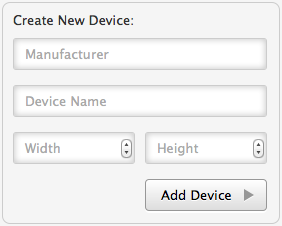

Responsive Resize
Adding Custom Devices
You can define your own devices and add them to the Devices bar.
- Open the 'Devices Panel' by selecting 'Add / Remove Devices…' from the Devices menu or from the Customize menu
 , or use the keyboard shortcut ⌘D.
, or use the keyboard shortcut ⌘D.
- Add a Manufacturer Name, a Device Name and the Width and Height of the new device in to the input fields in the 'Create New Device:' box.

- Click 'Add Device' to add the device to the Devices bar.
NOTE: As well as defining devices you can add devices from a set of Preset Devices.